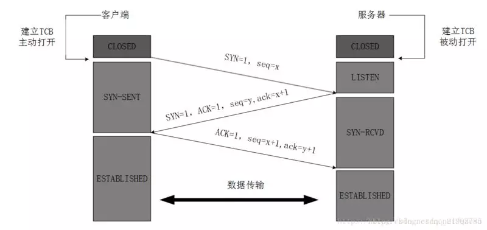
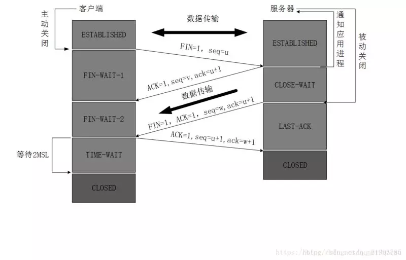

服务器的状态为：LISTEN（等待响应）
TCP协议，它是这样规定的：
客户端向服务器发送报文，发出请求SYN=1，同时选择一个初始序号seq=x.（初始序号随机）
(SYN是synchronization同步的简称，seq为sequcence序号的缩写。)
这时，客户端的状态更改为SYN-SENT（synchronization_sent同步已发送）状态。
服务器接收到请求变更状态：
从LISTEN变为SYNC_RCVD（synchronization_recieved同步已收到）。
TCP协议中是这样规定的：
当服务器收到请求报文，会向客户端发出确认报文。SYN=1,ACK=1,ack=x+1，同时发送序号为seq=y。
ACK是acknowledgement确认的简称，小写的ack是确认编号(确认接收到客服端seq+1)
客服端收到响应状态变更为：ESTABLISHED（established 成立）
在客户端收到服务端发送的TCP建立验证请求后，客户端向服务器给出确认。返回服务器ACK=1，确认编号ack=y+1，在自己的序号上加上seq=x+1。
服务端收到响应状态变更为：ESTABLISHED（established 成立）
握手结束开始传输数据。
TCP协议是这样规定的：
客户端进程发出连接释放报文，并且停止发送数据。设置报文FIN=1，其序列号为seq=u
（FIN的意思是finis终结的意思）
客户端状态为：FIN-WAIT-1（终止等待1）
服务器收到连接释放报文，发出确认报文，ACK=1，ack=u+1。seq=v。
服务器变更状态：CLOSE_WAIT（关闭待待）
客户端接收到响应状态为：FIN-WAIT-2（终止等待2）
TCP协议是这样规定的：
服务器将最后的数据发送完毕后，就向客户端发送连接释放报文FIN=1，ACK=1, ack=u+1，服务器又发送了一些数据后截止，序列号为seq=w
服务端状态变更为：LAST_ACK(最终动作)
客服端接收到响应：TIME_WAIT阶段
TCP协议是这样规定的：
客户端收到服务器的连接释放报文后，必须发出确认，ACK=1，ack=w+1，而自己的序列号是seq=u+1。
客服端接收到响应：在TIME_WAIT阶段等待2MSL(两次交谈响应时间那么长)。进入CLOSED
服务端接收到响应：进入状态CLOSED（关闭连接）
因为TCP是全双工通信的
（1）第一次挥手
因此当主动方发送断开连接的请求（即FIN报文）给被动方时，仅仅代表主动方不会再发送数据报文了，但主动方仍可以接收数据报文。
（2）第二次挥手
被动方此时有可能还有相应的数据报文需要发送，因此需要先发送ACK报文，告知主动方“我知道你想断开连接的请求了”。这样主动方便不会因为没有收到应答而继续发送断开连接的请求（即FIN报文）。
（3）第三次挥手
被动方在处理完数据报文后，便发送给主动方FIN报文；这样可以保证数据通信正常可靠地完成。发送完FIN报文后，被动方进入LAST_ACK阶段（超时等待）。
（4）第四挥手
如果主动方及时发送ACK报文进行连接中断的确认，这时被动方就直接释放连接，进入可用状态。